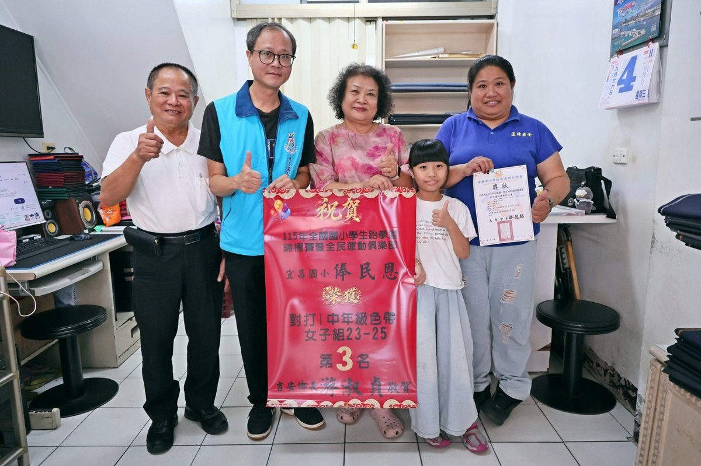

吉安俸民恩全國跆拳道摘銅 鄉長嘉勉張貼紅榜

可樂電子報小編/編輯
吉安鄉體育再傳好消息，宜昌國小三年級學生俸民恩參加中華民國115年全國國小學生跆拳道錦標賽暨全民運動俱樂部比賽，在國小中年級色帶女子組對打23至25公斤級賽事中脫穎而出，勇奪第三名，為花蓮與吉安爭光。鄉長游淑貞獲悉後，指示公所團隊於4日下午前往選手外公、外婆住處張貼祝賀紅榜。

俸民恩在家人支持下，從幼兒園大班開始接觸跆拳道，至今累積多年訓練經驗。目前她於吉安鄉戰櫟跆拳道訓練中心慶豐館接受教練團隊指導，每天至少練習一小時，除精進對打技巧，也持續加強核心肌群、體能與專項技術。教練團依她的體能與技術狀況調整課表，從基本步伐、踢擊到對打節奏，逐步建立比賽所需的反應與判斷。

回顧參賽經歷，俸民恩在縣級比賽已多次拿下不錯成績。民國114年12月她首度跨縣市挑戰，前往高雄參加第二屆全國理事長盃跆拳道錦標賽，即獲得第五名。此次在教練鼓勵下挑戰全國賽，把平日訓練成果完整發揮在擂臺上，成功拿下對打項目全國第三名，展現穩定進步的實力，也從每一場比賽中修正缺失。

媽媽黃巧瑋表示，原本並沒有預期孩子能拿到這麼亮眼的成績，這次比賽適逢中秋連假，外公、外婆與舅舅等親友特別組成應援團到場加油，既給孩子滿滿支持，也趁機安排家庭旅遊，留下難得回憶。俸民恩今年1月才通過色帶階段1級紅黑帶檢定，近期還將參加縣運跆拳道對打及品勢賽事，家人會尊重孩子的節奏，陪伴她穩定成長。

公所團隊這次專程到俸民恩外公、外婆家張貼紅榜。由於她放學後都在外公、外婆家寫功課，再步行到鄰近道館練習，家人得知公所送來祝賀心意，既驚喜又感動，隨即把象徵榮耀的紅榜貼在門口。媽媽黃巧瑋也說，過兩天會把紅榜帶到道館，與教練分享喜悅並表達感謝，這份來自地方的祝福，也讓家人感受到公所對基層體育的重視。

鄉長游淑貞表示，孩子能在全國競技舞臺獲得肯定，背後是選手的努力、教練的專業指導，以及家人長期支持與陪伴。公所張貼紅榜傳遞祝福，不只是肯定選手付出，也希望讓更多孩子看見運動的價值，勇敢培養興趣、挑戰自我。未來在教練與家人陪伴下持續朝更高目標邁進，公所也會持續支持基層運動發展，讓更多孩子有發揮的舞臺。
🌟 掌握花蓮在地第一手資訊・歡迎訂閱追蹤
深度紀實報導、在地精采影音專題，第一時間接收最新消息！